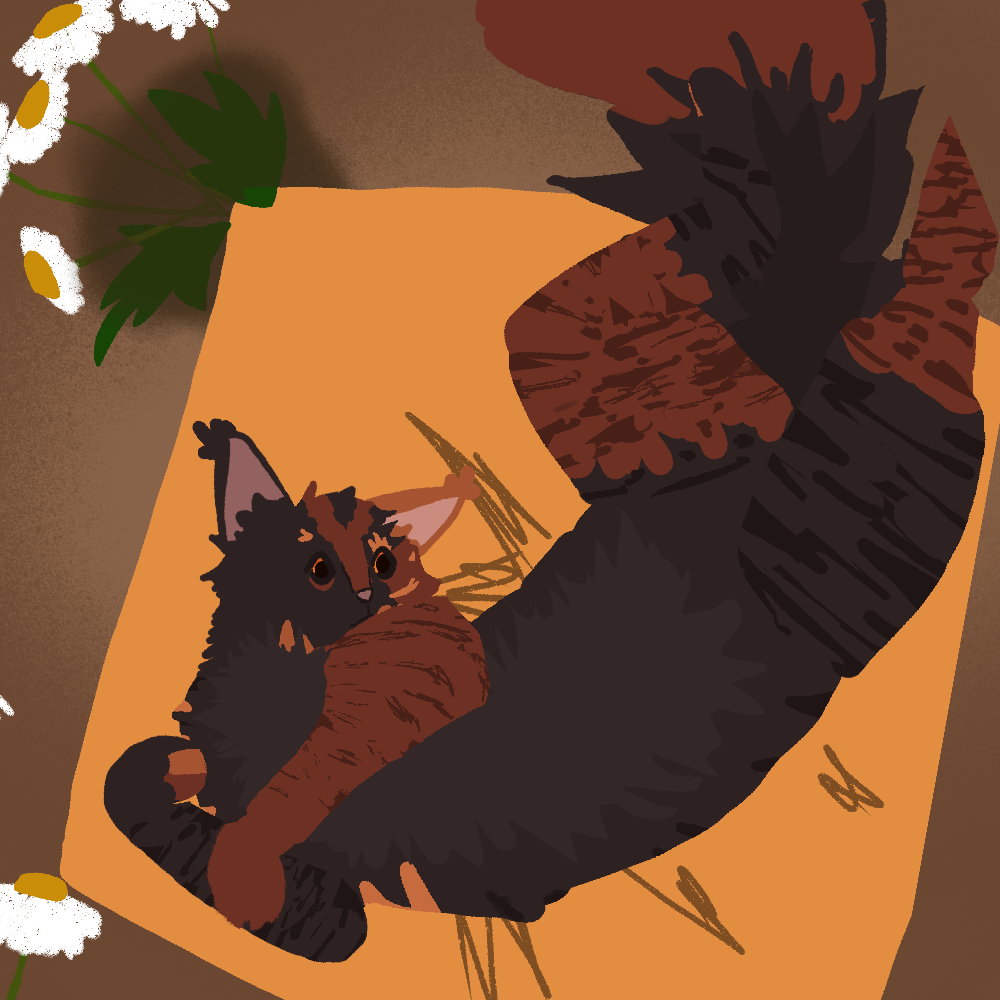

Hey there, I’m Cardinal William! As the first cardinal of the Holy Church of Honselaar, I am both the mediator and instigator in most situations. As a sophomore in Canyon Crest Academy, I am slowly losing faith in my ability to do school work. I am currently in Art4All and International Youth Neuroscience Association (IYNA), and am on Costumes for Midsummer Night’s Dream. I’m also the resident caffeine provider in the form of tea and coffee (and occasionally caffeinated MIO) and sell cookies (50¢ each, + extra for add ons/specific recipe requests), bread ($1 per loaf), and other baked goods. For more information, contact me at liangwilliam568@gmail.com or on Discord at ‘williamatyourservice.’ (period included).
Isopods (and other animals)
Image credit: cedric_lee
I’m very interested in isopods (scientific name isopoda), both terrestrial and aquatic. For those unfamiliar with them, they are those little roly-polies in the garden, but also their nonrolling cousins such as sow bugs. The isopod raising hobby has definitely exploded in recent years, with Rubber Ducky isopods going viral on social media, but I do not own any isopods at the moment. My interest in animals does extend to whatever species you enjoy, and I will gladly engage in conversation if approached (and sometimes if not). If anyone wants to help me find some Platyarthrus aiasensis, our local rare 1 mm long isopod, please contact me.
Other Interests
Image credit: cardwill (me) Character credit:
I’m a digital and traditional artist and do fiber crafts like crochet and knitting. I also write poems and stories, and my current projects include the ever expanding Mythology Documents (collaborative effort), a mini comic about an up-and-coming hacker group exposing school corruption, and a lovecraftian horror musical/play set in a college theater department as they work on their newest production, ‘The King in Yellow’, inspired by Robert W. Chambers’ novel of the same name and H. P. Lovecraft. I also play minesweeper, and my personal bests are 3.181 seconds beginner, 21.855 seconds intermediate, and 62.864 seconds expert (chording and flagging included; my no flagging times are as follows: 3.181 beginner, 28.1 int, 105.658 ex.). I also play table tennis (1547 USATT rating) and research the Enigma machines of WW2. I played piano for 7 years and received half a year’s instruction on classical guitar and have been self taught since.